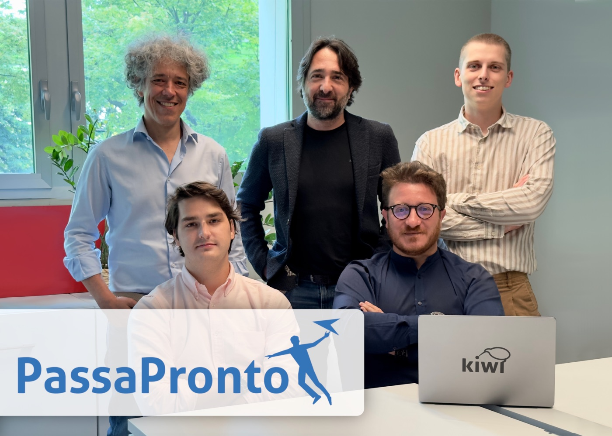

A practical solution that monitors real-time availability of passport
appointment slots on the Italian State Police website, sending notifications via Telegram or
email.
PassaPronto was born out of a very concrete frustration shared by most Italians: booking an appointment
to renew a passport on the Italian State Police (Polizia di Stato) portal, where waiting lists routinely
stretch for months and free slots appear at random, unpredictable moments as other bookings get
cancelled or new capacity is released. Manually refreshing the booking page dozens of times a day is
the only workaround most people find — and it rarely works.
PassaPronto automates that refreshing for the user. A background worker polls the State Police booking
system on a schedule, tracking the specific police headquarters (questura) the user cares about, and
compares each response against the last known state to detect newly opened slots. As soon as a new
opening is found, the user is notified within seconds via Telegram or email, with enough time to open
the official site and secure the appointment before someone else takes it.
The service is packaged as a Streamlit application — used both to configure monitoring and to manage
notification preferences — and shipped in a Docker container so the whole stack (scheduler, notifier
and web UI) can be deployed and scaled as a single unit. Live since 2023, it has helped a large number
of users skip the endless refresh cycle and get their passport appointment in days rather than months,
and was covered by local press (PrimaBrescia.it) as a practical fix to a widely felt problem.
Key features
Continuous slot monitoring — a scheduled background process polls the Polizia di
Stato appointment portal at regular intervals, so the user never has to manually refresh the page
themselves.
Instant alerts — the moment a new appointment slot opens up, a notification is
pushed out via Telegram or email, giving the user a head start to book it before it's taken.
Multi-channel notifications — users choose the channel that suits them: a Telegram
bot for push-style, mobile-first alerts, or plain email for those who prefer it.
Location-aware tracking — monitoring can be scoped to the specific questura or
office the user needs, rather than surfacing irrelevant openings elsewhere in the country.
Self-service configuration — the Streamlit front end lets users set up and manage
their own monitoring requests and notification preferences without any manual intervention.
Change detection, not noise — the checker diffs each poll against the previously
seen availability so users are alerted only on genuinely new openings, not repeat states.
Containerised deployment — the whole service ships as a Docker image, making it
easy to deploy, restart and keep running reliably as a long-lived background service.
Tech stack
Python
Drives the core logic: periodically querying the State Police booking system, parsing the
responses, diffing them against previously seen availability, and triggering a notification the
moment a new slot is detected.
Streamlit
Provides the web interface used to configure what to monitor and how to be notified, turning a
background script into a self-service product that non-technical users can operate on their
own.
Docker
Packages the scheduler, notifier and Streamlit UI into a single deployable image, keeping the
service easy to run continuously and to redeploy without environment drift.
Telegram Bot API
Powers the Telegram notification channel, delivering push-style alerts straight to the user's
phone as soon as a new appointment slot is found — the fastest of the two notification paths.
Interview
In June 2023, PassaPronto was featured by PrimaBrescia.it, a local Brescia news outlet, in a piece by
journalist Federica Gisonna. The same story ran in print a few days later in Chiari Week, the
weekly paper covering Chiari and the surrounding area, on its 16 June 2023 front section. The article
traces the tool back to its origin as a personal workaround:
co-founder Giovanni Bocchi described logging in every morning at 8am trying to catch a slot on a
booking site that was constantly overloaded and unresponsive, and turning that frustration into a
side project with colleagues Antonio Ciusa, Marco Bellati, Francesco Cuccio and Filippo Barbieri at
Kiwi Data Science.
Once the tool worked for its creators, the team — as Bocchi and Ciusa explained to the paper — chose to
open it up to everyone for free after confirming the running costs were sustainable, then spent extra
effort polishing the interface so friends and early testers who tried it could pick it up without any
explanation. The piece closes by walking through the same three-step flow — province, questure,
notification channel — that the app still uses today.

The PassaPronto team, from the PrimaBrescia.it feature (June 2023).The print version of the story, Chiari Week, 16 June 2023.